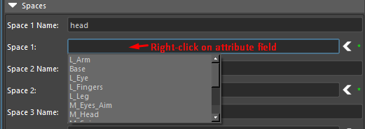
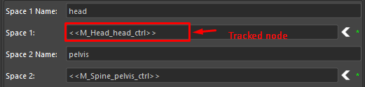
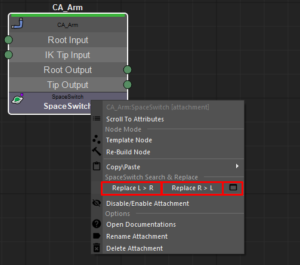
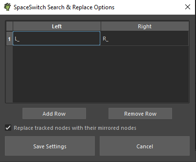

A SpaceSwitch creates an attribute or attributes on a ctrl that the animator can use to
switch between spaces.
For Example, to have the wrist ctrl move with the head or with
the hips.
Attributes:
Unlike string input tracked nodes, tracked ctrls or joints do not require updating if the node they are attached to has been renamed. This is because tracked nodes are linked to their node by a unique identifier, rather than the node's name. This is different from string inputs that rely on the node's name and will need to be updated if the name is changed.

SpaceSwitch Search & Replace:
As of version 1.02.00, a 'Replace L > R', 'Replace R > L', and an 'Options' buttons will appear when you right-click on a SpaceSwitch attachment.

The 'Options' button presents a table where you can enter
"Left string terms" and "Right string terms". Once you've entered these values, pressing the
'Replace L > R' button will trigger Arise to search for the "Left string terms" within the
"SpaceSwitch" space attributes. Arise will then replace any instances of the "Left string terms" found
in these attributes with the corresponding "Right string terms".

In addition, Arise can assist you in replacing tracked ctrls and joints located on nodes with the prefix "L_" or "R_" to their mirrored nodes. To do this, simply check the "Replace tracked nodes with their mirrored nodes" checkbox.
_____________________________________________
Get Arise at: https://www.ariserigging.com